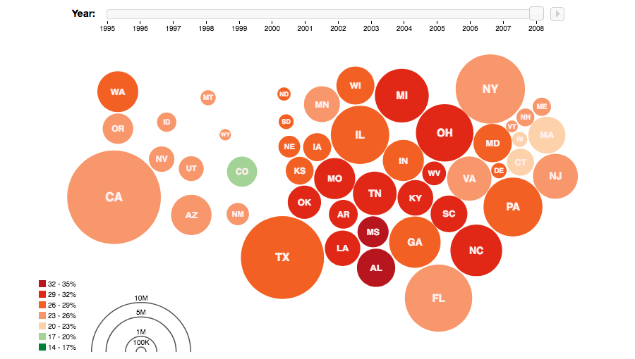
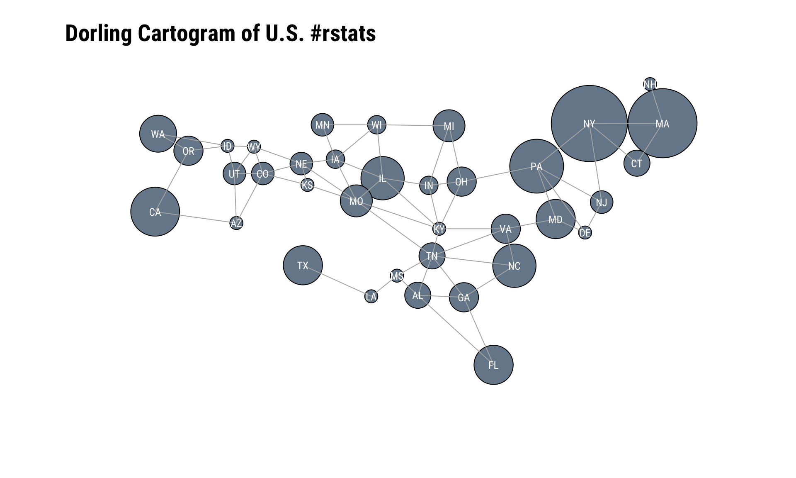

Recipe 20 Visualizing Geodata with a Dorling Cartogram
20.1 Problem
You want to visualize geolocation information (for example, the location field from user profile information, included in a batch of tweets such as a search query), in order to determine if there is a correlation between location and some other criterion.
20.2 Solution
Devise a heuristic to extract the state from the location information in user profiles and visualize it with a Dorling Cartogram.
20.3 Discussion
(As this cookbook’s Python counterpart notes): “A Dorling Cartogram is essentially a bubble chart where each bubble corresponds to a geographic area such as a state, and each bubble is situated as close as possible to its actual location on a map without overlapping with any other bubbles. Since the size and/or color of each bubble can be used to represent meaningful things, a Dorling Cartogram can give you a very intuitive view of data as it relates to geographic boundaries or regions of a larger land mass. The Protovis toolkit comes with some machinery for creating Dorling Cartograms for locations in the United States, and one interesting example of something that you could do builds upon Recipe 19, which demonstrated an approach that you could use to analyze the users who authored tweets from a targeted query.”
One seminal, modern example for Dorling cartograms is Mike Bostock’s Protovis (a pre-cursor to D3) version

I have a love/hate relationship with cartograms. On the one hand, they capture attention by preying on the weakness most of us have to maps. On the other hand, most adults in my home country barely know where their state is on a map when they can see its shape, so most cartograms require extensive labeling and the shape distortions can initially disorient the viewer. Many cartograms also degrade the ability to readily discern the proportions or precision of the underlying data. But, we’re working with Twitter data and the goal for this recipe is to pull a sample of tweets and see where the (geographic) action is at, so using this particular cartogram style for it is not a terrible choice.
NOTE: This recipe and the next (and, final!) recipe both cover Twitter and geographic data. Any reasonable person should disable the association of location information to Tweets for a whole host of reasons which include security and safety. They should also make the location information in their profile human discernable but difficult for machines to process (better still — use fake location data in your profile). However, there are still a cadre of Twitter users who gleefully provide this information — or, disinformation — so we all can process it.
Rather than rely on the geolocation data of a tweet, let’s pull down some more #rstats tweets and try to limit the locations of the tweets to just the U.S. (despite disabling association of location data, Twitter can still internally, generally figure out where you’re tweeting from, especially if you’re on a mobile device).
After that, we’ll lookup the users of the tweets and extract the location information from their user profile.
Once we have that location information, we’ll filter it a bit to discern which state it came from. We’ll cover the visualization component after we deal with the data:
library(rtweet)
library(broom)
library(eechidna)
library(cartogram) # chxy/cartogram
library(hrbrthemes)
library(tidyverse)# search twitter for tweets
rstats_us <- search_tweets("#rstats", 3000, geocode = "2.877742,-97.380979,3000mi") # geocode request isn't perfect but helps narrow down
# lookup each user (uniquely) so we can grab location information
user_info <- lookup_users(unique(rstats_us$user_id))
discard(user_info$location, `==`, "") %>% # ignore blank data
str_match(sprintf("(%s)", paste0(state.abb, collapse="|"))) %>% # try to match U.S. state abbreviations
.[,2] %>% # the previous step creates a matrix with column 2 being the extracted information (if any)
discard(is.na) %>% # if no state match was found the value is NA so discard this one
table() %>% # some habits are hard to break
broom::tidy() %>% # but we can tidy them!
set_names(c("state", "n")) %>% # these are more representative names
tbl_df() %>% # not really necessary but I was printing this when testing
arrange(desc(n)) %>% # same as ^^
left_join(
as_data_frame(maps::state.carto.center) %>% # join state cartographic center data
mutate(state=state.abb)
) %>%
# the GitHub-only cartogram package nas a data structure which holds state adjacency information
# by specifying that here, it will help make the force-directed cartogram circle positioning more precise (and pretty)
filter(state %in% names(cartogram::statenbrs)) -> for_dor
glimpse(for_dor)## Observations: 36
## Variables: 4
## $ state <chr> "NY", "MA", "PA", "CA", "IL", "NC", "FL", "MD", "TX", "W...
## $ n <int> 34, 28, 17, 14, 11, 11, 9, 9, 9, 8, 6, 6, 5, 5, 5, 5, 4,...
## $ x <dbl> 8.041600, 9.025060, 7.222050, 1.410693, 4.823002, 6.9985...
## $ y <dbl> 8.746802, 8.684993, 8.029811, 7.337543, 7.757849, 6.5711...The visualization component needs some explanation since it’s a bit hack-ish. Xiaoyue Cheng has had an R cartogram package on GitHub for just over five years. It’s not feature complete but has a (mostly) working Dorling cartogram generator. Carson Sievert incorporated and enhanced some of the cartogram functions for the rOpenSci eechidna package, but uses it internally. Finally, cartogram package has some data sets that make Dorling U.S. state cartograms a bit more visually appealing.
What that all means is we’ll be calling an unexported function from eechidna and using some data from cartogram. This is far from an optimal situation, especially since it also means we won’t be using ggplot2 for the final visualization. But, it works!
The code block below starts by setting up some base R plotting parameters, one of which — col="white" — is going to cause you some grief if you don’t remember to change it to black since it impacts the default color for base R plots. This is also an opportunity to set the font family for the text labels since there is no way to pass text label aesthetics in the dorling() function.
We pass in the:
- state label
- state center
- a scaled value for the tweet count
- state neighbor information
and tweak some aesthetics to produce the final plot. This example opted to “connect the dots” to more explicitly show neighbor information.
par(family=font_rc, col="white")
eechidna:::dorling(
for_dor$state, for_dor$x, for_dor$y, sqrt(for_dor$n), nbr=cartogram::statenbrs,
animation = FALSE, nbredge = TRUE, iteration=100, name.text=TRUE, dist.ratio=1.2,
main="Dorling Cartogram of U.S. #rstats", xlab='', ylab='', col="lightslategray",
frame=FALSE, asp=1, family=font_rc, cex.main=1.75, adj=0
) -> dor